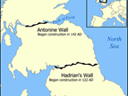
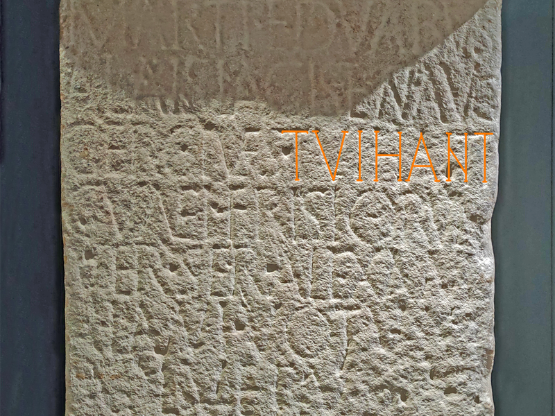

Altaarstenen


Object: 5
Voor je zie je twee altaarstenen. Dit zijn kopieën; de originelen uit het jaar 230 staan in een museum bij de Muur van Hadrianus, vlak bij de grens tussen het huidige Engeland en Schotland. Deze kopieën zijn ook al oud, want ze zijn meer dan 100 jaar geleden gemaakt. In het Latijn staat dat met het oprichten van deze altaarstenen een belofte is nagekomen. De tekst is gericht aan de god Mars Thingsus, twee Germaanse godinnen en de goddelijke geest van keizer Augustus. Er staat dat de Germaanse burgers van de Tuihanti-stam hun belofte vrijwillig en terecht hebben vervuld. Het verhaal gaat dat twee leden van de Tuihanti-stam deel uitmaakten van een Fries legeronderdeel dat als huurlingen voor de Romeinen vocht. De twee soldaten kregen een gevaarlijke opdracht. Bij een tempel ter ere van de god Mars gingen ze bidden en beloofden: “Als ik het overleef, richt ik een altaar op.” Die opdracht was waarschijnlijk in Schotland, destijds het land van de Picten. Ze overleefden de gevaarlijke opdracht en hebben deze altaarstenen ter ere van Mars opgericht. Tacitus, een Romeinse geschiedschrijver, schreef in het jaar 98 na Christus dat er rond het jaar 12 een veldslag was tussen de Romeinen en de Germaanse stam Marsi. Een van de stammen die de Marsi te hulp kwam, waren de Tubanten, zo schreef hij. Het verslag van Tacitus en deze altaarstenen zijn de oudste verwijzingen naar de stam der Tuihanti of Tubanten. De stamnaam Tuihanti veranderde via Tuente (11e eeuw) naar het woord “Twente”. Twente is archeologisch gezien redelijk goed onderzocht, maar helaas is er tot nu toe nog geen bewijs gevonden dat in de Romeinse tijd hier een grote Germaanse stam, zoals de Tubanten, heeft geleefd.